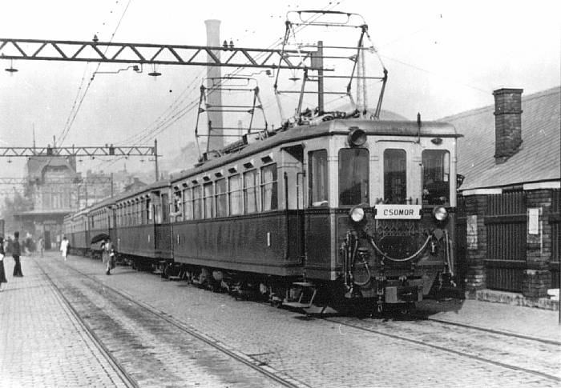

Az első, 10,3 km hosszú szakaszt 1888. június 20-án adták át a forgalomnak, amely akkor a MÁV központi pályaudvara (ma Keleti pu.) mellől indult Rákosfalva érintésével egészen Cinkotáig. A vonal "őskorában" gőzmozdonyok vontatták a szerelvényeket, Cinkotán pedig kocsiszín épült, ahol a járművek karbantartását a mai napig végzik. A második, 9,8 km hosszúságú szakaszt 1900. augusztus 28-án nyitották meg: Cinkota állomástól vezetett Csömör és Kistarcsa érintésével Kerepesig.
A villamos üzemmóddal a forgalom 1911. április 19-én indult meg a Keleti pályaudvar - Cinkota közötti szakaszon. A Kerepes ideiglenes végállomástól Gödöllő MÁV-állomásig tartó harmadik, ezúttal 12,8 km hosszú szakaszt 1911. november 25-én adták át a forgalomnak, immár eleve villamos üzemre berendezve. A vonalhosszabbítással egy időben épült a Cinkota és Kistarcsa közötti rövidebb vonalszakasz, amely Csömör állomást már nem érintette. Ezt a vonalvezetést a Cinkota után található kavicsbánya melletti dombok átvágásával alakították ki, így a vonal hossza 6,2 km-el lett rövidebb. Cinkota és Kistarcsa között ekkor új megállóhely is épült Ilonatelep néven, a Csömörre vezető vonalszakasz pedig szárnyvonallá vált.
A Budapesten belüli vonalszakasz az első időkben szintben keresztezte a Budapest - Cegléd - Szolnok vasútvonalat. Az egyre növekvő forgalom miatt azonban elkerülhetetlenné vált a HÉV pályaszintjének módosítása, ami 1939 és 1944 között meg is történt. A Kerepesi úti vasúti hidat 1941. augusztus 5-én adták át a forgalomnak. Az 1950-es években tervek készültek a HÉV és az építendő metró közös állomására a Népstadionnál. A metró építése azonban leállt, és csak 1963-ban indult meg újra. Ekkor a metró és a HÉV átszálló csomópontját a Fehér út két oldalán az Örs vezér terén építették meg.
A Keleti pályaudvar melletti egykori végállomást 1970. április 3-án szüntették meg, amikor átadták a metró Deák Ferenc tér és Örs vezér tér közötti szakaszát. Az Örs vezért terére került a kelet-pesti autóbuszok végállomása is, így kialakult Budapest egyik legnagyobb forgalmú csomópontja.
A Gödöllői HÉV végállomás mellett található Gödöllő vasútállomása is, ahol egy az 1882-es eredeti tervek alapján felújított monarchia-beli műemlék áll: a Királyi Váró. Nemcsak megjelenésében királyi az épület, feladata is az volt, hogy az uralkodópár - Ferenc József császár és Erzsébet királyné - kényelmét szolgálja, akik Gödöllőre utazva érkeztek ide a fővárosból. Királyi Váró Budapest mindkét nagy pályaudvarán, a Keleti- és Nyugati pályaudvarokon is épült, de egyik sem önálló épület, mint a neoreneszánsz stílust elegánsan képviselő gödöllői. Ferenc József zöld selyemtapétás várótermét és Erzsébet királyné halványsárga selyemmel fedett várószobáját a bordó kárpitú Hercegi Váró köti össze. Az egykori pompás berendezés megjelenik a Gödöllői Városi Múzeum fotókiállításán, míg a királyi vonatokról készült korabeli felvételek és makettek a Magyar Műszaki és Közlekedési Múzeum közlekedéstörténeti kiállításán láthatók. Az épület oldalszárnyában kapott helyet a speciális édességeket is kínáló Monarchia Kávézó, az ide érkező turisták az információs irodában kapnak tájékoztatást.
A Gödöllői HÉV érdekessége, hogy a vonatok - szemben más közlekedési eszközökkel - a például Angliában használatos "balra tarts" közlekedési irány szerint haladnak. Az okok még a II. világháború előttre nyúlnak vissza. 1941-ig Magyarországon baloldali közlekedés volt érvényben. A fellelhető források alapján hazánkban a környező országokhoz igazodva született döntés az áttérésről még 1939-ben, ám a megvalósítás a második világháború kitörése miatt két évvel elhúzódott. Az 1941. június 26-án kiadott 187 000/1941-es BM rendeletben kiadottak szerint két lépésben kellett végrehajtani az áttérést. Ennek megfelelően július 6-án hajnali három órakor - Budapest és környékének kivételével - az egész országban, november 9-én hajnali 3-órakor pedig Budapesten és környékén tértek át a jobboldali közlekedésre. Az átállást természetesen gondos előkészületek előzték meg. Az országban 1973-ig még két olyan vonal volt, amely még "angolosan" közlekedett: a ’73-as felújításig a MillFAV, azaz a kisföldalatti tartotta meg az "eredeti irányt". Ma már azonban csak a Gödöllői HÉV közlekedik a balra tarts elve szerint, amely miatt ez a vonal igazi közlekedéstörténeti unikum.